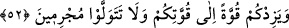
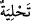
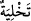
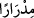
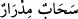
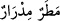

Yaşlı bir kadıncağız Hz. Musa’ya Yusuf (a.s.)’ın kemiklerini bulması için kılavuzluk
etmişti. Musa da kadıncağıza: “Senin için hangisi daha iyi, cennette benimle birlikte
olmanı istemem mi, yoksa yüz koyun mu? deyince kadın: “Cennet” demişti.
Dinlerine çok bağlı olduklarından dolayı eski âlimler vaaz, Kur’an öğretmek,
imamlık, hatiplik, müezzinlik, ve benzeri hizmetler için ücret kabul etmemişlerdir.
Tefsir bilen kimse ziyan eder,
İlim ve edebi bir ekmeğe satar ise.
52. “Ey kavmim Rabb’inizden mağfiret dileyin, sonra da O’na tevbe edin ki,
gökten üzerinize bol bol rahmet göndersin, kuvvetinize kuvvet katsın. Günah
işleyerek yüz çevirmeyin.”
“Ey kavmim, Rabb’inizden mağfiret dileyin” ona îmân edin “sonra” başkasına
kulluk ettiğinizden dolayı “O’na tevbe edin” Çünkü tevbe, Bahru’l-ulûm’da da
belirtildiği gibi ancak îmân ettikten sonra sahih olur.
Gönlüme doğan mânâ şöyledir: Allah’a îmân ederek, şirk ve mâsıyet gibi geçmiş
günahlarınızdan dolayı Allah’tan mağfiret dileyin. Çünkü îmân, geçmişteki günahları
silip atar. Sonra da taat ederek O’na yönelin. Çünkü iyiliklerle süslenme (
)
kötülüklerden temizlenip arınmadan (
) sonra gelir.
“ki gökten üzerinize bol bol rahmet” yağmur “göndersin,”
“
” lafzı, mübalağalı ism-i fail sıygalarından çokluk ifade eder. Kelimenin aslı, “
”dır. Mânâsı, “süt sağanın eline çok geldi” demektir. İhtiyaç duyulduğu
zamanlarda yağmurun hiç kesilmeden yağması durumunda: “
” ve “
”
denir. Buna göre âyetin mânâsı şöyledir: “İhtiyaç duyduğunuz her vakit hiç kesilmeksizin
yağan yağmur göndersin.” Kâşifî ise şöyle der: “ki gökten kesintisiz yağmur göndersin.”
“kuvvetinize kuvvet katsın.” gücünüzü artırsın. Hûd (a.s.)’ın kavmini, yağmur ve güç
fazlalığı ile îmâna teşvik etmesi, tarla, bahçe ve bostan sahibi kişiler olan Âd kavminin
bunlara çok fazla haris olmalarından ve suya da ihtiyaçları olduğu içindir. Âd kavmi,
kendilerine verilen güç, kuvvet, kahramanlık ve cesaret özellikleri sebebiyle oldukça
emin ve kendine güvenen bir kavimdi. Bu yüzden düşmanları onlara pek yaklaşamaz ve
herkes onlardan korkardı.
Kaşifî der ki: “Rivâyet edilir ki Âd kavmi Hûd (a.s.)’ın dâvetini kabul etmediler. Hak
Sübhânehû ve Teâlâ bunun uğursuzluğu olarak üç yıl onlardan yağmuru kesti. Hanımları